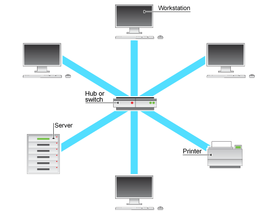

The History of Systems and Networks
If we think about science, we would all agree that in present days this is what keeps the world going. In any area, in order to see the bigger picture, however, we have to take a step back and understand the whole evolution process so that we can evaluate and appreciate the main achievements, the existing trends and the future prospects of specific developments.
Example Header
Computer networks emerged relatively recently, in the late 1960s. Since computers and telephones are both universal instruments of communication, the older and more widely adopted telephone networks were natural predecessors. On the other hand, computer networks enriched the world of communications in such way that the information, accumulated by human civilization during the several thousand years of existence, easily accessible whenever and wherever. This inexhaustible store of information is continuing to grow steadily. With the rapid growth of the Internet in the mid-1990s, it became clear that individuals value instant communications and free anonymous access to information.
The oldest possible example of a network covering large territories and serving multiple clients is the water-supply system in ancient Rome. Using the same principle, computer networks represent distributed computer systems in which a group of computers operate in a coordinated manner by exchanging data. They are a convenient way of transmitting information over long distances.
The large bulky and expensive computers of the 1950s though were intended only for a small group of privileged users. They occupied entire building and by no means were able to serve interactively. With the usage of such centralized systems based on mainframes, users would receive results a day later in the form of a printout and errors would cause great delays.
In the early 1960s, new methods of organizing computer processing emerged since processors became cheaper. Taking into consideration the end-user’s convenience, multiterminal systems appeared. Each user had their own terminal for communication with the computer with shorter response time span. Gradually, terminals moved out of computer centers and onto desktops over entire organizations. Data input and output became distributed. Multiterminal systems were the first step towards the development of Local Area Networks (LANs).
In spite of the superficial resemblance to distributed systems, multiterminal systems retained features of the centralized data processing. The need of providing access to a computer from remote terminals introduced the use of modems, which connected these terminals to computers through telephone lines. Connections between computers were also implemented and thus computers could exchange data in automatic mode which is basically the mechanism of any computer network. Developers of the first networks implemented services for file exchange, database synchronization, e-mail, etc. Chronologically, Wide Area Networks (WANs) were the first to appear and joined geographically distributed computers.
In 1969, The U.S. Department of Defense initiated research into joining the computers of defense and research centers into a network. This network, also known as ARPANET, served as a starting point for the construction of the first and most widely known WAN – the Internet. As ARPANET joined computers of different types and operating systems using common communication protocols, such operating system can be considered the first true network operating system. It allowed not only distribution of users but also organization of data storage. Processing was then distributed among computers connected by electric links. The progress of WAN depended mainly on the progress of telephone networks.
In the early 1970s started the development of minicomputers that accomplished some tasks much faster than mainframes. From that moment even small companies could enjoy having their own computers. All computers in the same organization, however, still operated independently. Such isolated work no longer satisfied and thus the first LAN appeared (a group of computers concentrated in a relatively small region).
With the adoption of personal computers (PCs) provided the ideal elements for building networks. As they were not only playing the role. of clients but also performing data storage and processing center functions, PCs became more popular and forced minicomputers and mainframes out of these roles.
Furthermore, the dominance of the Internet protocol (IP) contributed to the convergence of LANs and WANs and is used to create a unified internetwork on the basis of various subnets.
Taking into consideration the fact that computer and telecommunication networks use information as the main resource provided to clients, attempts are made to create a universal multiservice network. As a result from the convergence process, a new term was introduced – infocommunications networks, which specifies two components of contemporary networks – informational (computer-based) and telecommunications.